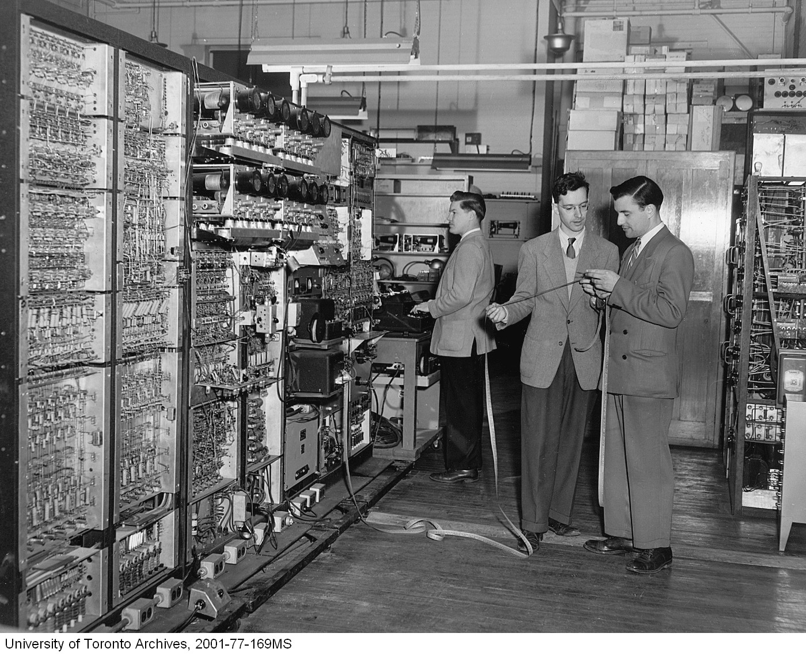
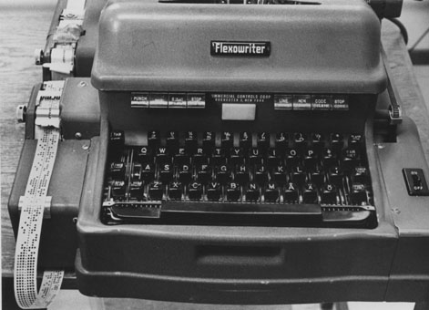

The computation demands of WWII encouraged the development of a number of programmable electronic computers,
most of which were located in the United States (Williams, 1994, p.4). Although Canada had yet to acquire an electronic
computer of their own, the University of Toronto’s extensive contributions to wartime calculations meant that it had a
strong mathematical division with many individuals who were interested in the power of contemporary computers (Campbell, 2006, pp. 11-15).
Upon securing a travel grant from the university, Samuel Beatty formed the Committee on Computing Machines alongside five other
men from the departments of mathematics, physics and electrical engineering, which, in 1946, went on to tour “virtually every
major computing centre in the United States” (Stachniak & Campbell, 2009, p. 13; Campbell, 2006, pp. 12-13, 16). With this
knowledge, the group formed the University of Toronto Computation Centre in 1947 (Williams, 1994, p. 5).
The ENIAC is widely considered to be the first electronic computer in the world. From left to right: Glen Beck and Betty Snyder (U.S. Army Photo, ca. 1947-1955)

(Canada Pictures Ltd., 1950)
The 12 cylinder units in the top of the machine are the Williams tubes, an electrostatic storage device.
In a 1992 interview, Leonard Casciato described their sensitivity: "you [could] comb your hair and that would be enough to destroy the contents . . . if you weren't careful" (as cited in Williams, 1994, p. 9).

(Hellström, 1967)
A modified Flexowriter similar to the one pictured was used to punch and read six-hole paper tape for input and output (Johnston, 1952, p. 155).
Developing the UTEC
In 1948, “a small team of graduate students was hired to design and build a prototype computer as a test bed and practice run, prior to building a full scale version” (Stachniak & Campbell, 2009, pp. 13-14). It was expected that the cost of developing the complete computer would be around $300,000 (Williams, 1994, p. 5).
The prototype, which was completed in 1951, took a lot of inspiration from Von Neumann’s IAS computer, whom the Committee had met with in 1946, likewise using a parallel design and Williams tubes for storage (Stachniak & Campbell, 2009, p. 14). Although more complicated and difficult to build, the parallel design was chosen for the speed advantages it promised over serial counterparts, and this choice might have allowed the UTEC to stand out amongst contemporary computers, most of which were serial (Stachniak & Campbell, 2009, p. 12).
Unfortunately, the UTEC was never very useful for the Computing Centre (Williams, 1994, pp. 9-10). Overall, the machine was reliable in that it could run for long periods of time (Williams, 1994, p. 9), with most issues coming from the Williams tubes being extremely sensitive to “temperature, supply voltage, electrical and magnetic disturbances, and … deterioration” (Johnston, 1952, pp. 155-156). But its small word size was a major limitation, meaning that some operations which could be completed within a single instruction by contemporary computers required multiple instructions for the UTEC, which greatly reduced the computing speed (Johnston, 1952, p. 156). Also, the prototype’s arithmetic unit only performed binary addition and subtraction, but plans for the full UTEC included multiplication and division as well (Campbell, 2006, pp. 104, 107).
Still, because the UTEC was only in the prototyping stage, limitations were expected and forgivable.
Building an experimental model first allowed for the testing of multiple different circuit layouts as well as different types of hardware components like gates and counters to determine which would be best for the full machine (Johnston, 1952, p. 154).
Planned improvments included the additional operations of multiplication and division, the purchase of a magnetic drum, and an increase in memory size, which would make the finished model far faster than the prototype (Williams, 1994, p. 10).
The full UTEC was expected to be completeable by 1954, and the investors were ready to supply the $300,000 estimate needed (Williams, 1994, p. 10; Campbell, 2006, p. 108).
The FERUT
Built at Manchester University, the Small Scale Experimental Machine (SSEM), affectionately nicknamed “The Baby,” became the
first computer to run a stored program in 1948 (Campbell, 2006, pp. 42, 142). Soon afterwards, the British government contracted
Ferranti to build a commercial version of SSEM with improvements to the prototype’s memory and arithmetic unit, and the use of an
additional Williams tube which created what are now known as the index registers, “a standard part of computer architecture” (Campbell, 2006, p. 143).
The Ferranti Mark I became “arguably the first computer to be delivered commercially” (Williams, 1994, p. 10).
Upon learning of the Ferranti Mark I’s availability, the NRC, one of UTEC’s major funders, suggested that UTEC be abandoned and the $300,000 used to
purchase the British computer (Stachniak & Campbell, 2009, p. 14). Although the Computation Centre initially refused in favour of building their own
computer, the desire of investors to have a usable machine installed within a few months rather than years and a promised $150,000 towards further
UTEC research eventually won out (Williams, 1994, p. 10). No further major developments would be made on the UTEC, however, and the project was
abandoned in favour of working with the new Ferranti Mark I (Williams, 1994, p. 10).
This computer was given the name Ferut (Ferranti University of Toronto) and almost immediately became “a major resource for Canadian science” when it was used in the construction of the St. Lawrence Seaway (Williams, 1994, pp. 10-11).
Comparing the Ferut to the UTEC
The Computation Centre’s initial hesitation towards purchasing the Ferut was not unfounded, seeing as the Ferranti Mark I “had been in operation in Manchester for only a short period of time” and had a spotty reliability record (Williams, 1994, p. 10). The Ferut was also a serial machine, meaning that the finished UTEC should have been faster (Campbell, 2006, pp. 142-143).
But besides just being usable quicker, the Ferut had some other advantages over the proposed full UTEC model. It was a stored program computer, meaning that, like modern computers, code could be stored internally and run without having to feed instructions to the machine like UTEC was doing with their punched paper tape. The Ferut’s ability to modify instruction addresses would allow for other useful programming operations, such as incrementing through a data structure like an array (Campbell, 2006, p. 143) or repeatedly looping through a set of instructions.
Console of the FERUT computer at the University of Toronto (Canada Pictures Ltd., 1958)
FERUT computer telegraph connection to the University of Saskatchewan. Pictured: Prof. Kelly Gotlieb (far left), C. Jenner, Audrey Bates (seated), and an official from CN Telegraph (Canada Pictures Ltd., 1955)
Legacy
Ironically, it might be said that the failure to build a complete UTEC was what propelled the University of Toronto to become a more successful and prominent member of the early computing community (Campbell, 2006, p. 134). By purchasing the Ferut, it became “one of the first schools in the world to have a first generation digital computer and to focus entirely on programming” (Campbell, 2006, p. 134) rather than spending years developing a computer that was not particularly revolutionary in any way except for being built in Canada. While many other universities which focused on early computer hardware development struggled “to convert their initial success into strong departments of computer science in the 1960s” (Stachniak & Campbell, 2009, p. 15), the University of Toronto went on, in 1964, to create the first computer science department in Canada to offer a doctoral degree (Campbell, 2006, p. ii).
This is not to say that the UTEC is not worthy of recognition as the first electronic computer in Canada, built by a team of “pioneer[s] in modern computing” (Stachniak & Campbell, 2009, p. 16). Although never fully completed, it provided many experiences and opportunities for its developers, including the ability to visit and share knowledge with other computation centres and form connections with other notable members in the field (Campbell, 2006, p. 133). Kates and Casciato in particular would go on to found “one of Canada’s first and most historically significant computing consulting companies, KCS Data Control” (Stachniak & Campbell, 2009, p. 15).
In these ways, the UTEC remains a fascinating and notable part of Canadian computing history, which should be regarded not as a failure but as a stepping stone to numerous more accomplishments in the field.